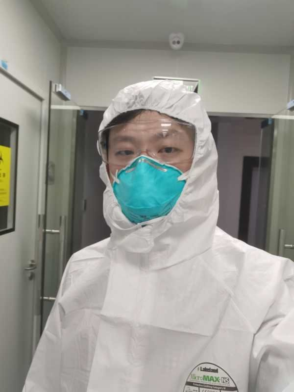
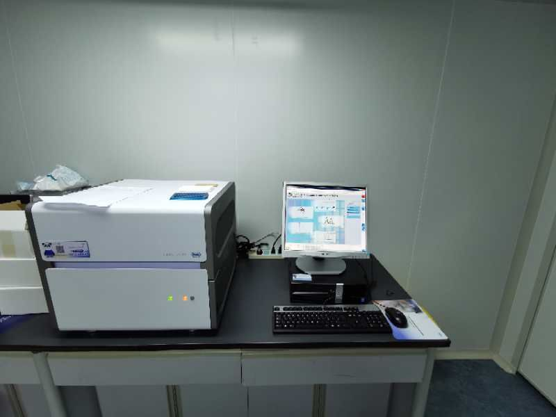
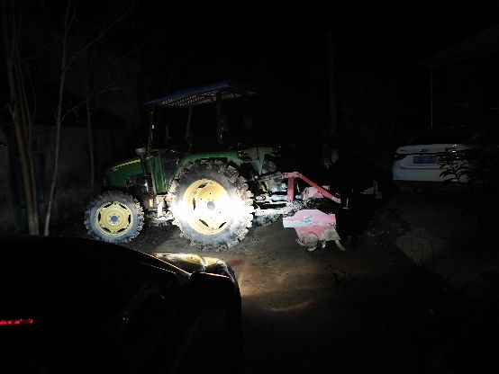
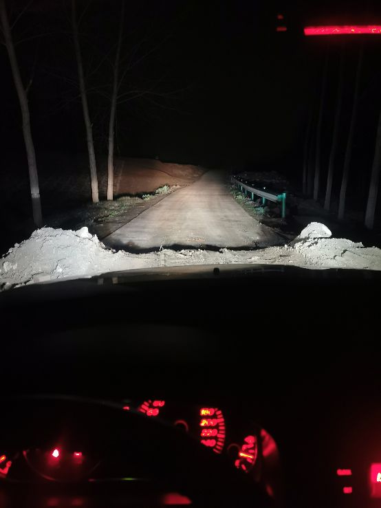
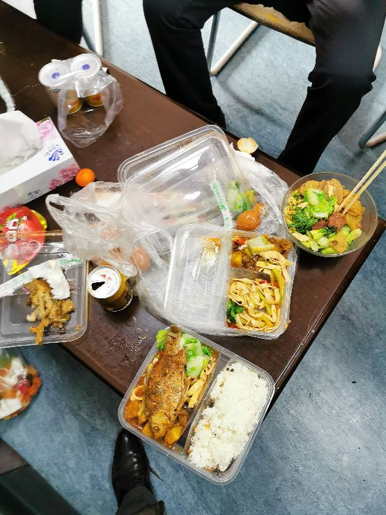

广东前置防疫关口 发热门诊患者核酸检查“一个不漏”
原文链接 备份链接 【财新网】（记者 黄姝伦 方祖望）在广东，只要踏进发热门诊的大门，就要接受核酸检测，排查是否感染了新冠肺炎。2月12日，广东省疫情发布会上，省卫健委副主任陈祝生称，全省发热门诊启动患者核酸检测排查，范围扩大至全员。 …

大家新闻里总是听到“核酸检测试剂盒”这个东西，试剂盒里的试剂自己不能判断阴性阳性的，这些试剂要放到我负责的核酸检测设备里，才能得出检测结论。
口述 | 彭 鑫
整理 | 黄 祺
现在大家说起去湖北，都感到非常恐惧。但因为工作，我最近去了几趟湖北，年初二那天的经历，就特别曲折。

彭鑫
我是罗氏诊断客户服务部的员工，工作地点在湖南长沙。通俗地说，我的工作就是检测设备的售后培训和服务。我管的产品是核酸检测设备。核酸检测专业说法是“病毒核酸载量检测”，过去可能很多人对这些东西不了解，新冠肺炎疫情发生后，全国人民都知道“核酸检测”了。
大家新闻里总是听到“核酸检测试剂盒”这个东西，试剂盒里的试剂自己不能判断阴性阳性的，这些试剂要放到我负责的核酸检测设备里，才能得出检测结论。这么打个比方吧：试剂盒就是汽油，我们的设备是汽车，汽油有了，得加进汽车，才能开起来。我的工作呢，相当于教人怎么开这辆车，以及维护汽车。
新型冠状病毒感染的肺炎疫情暴发后，我们罗氏诊断从上到下启动了紧急响应机制，集合全公司之力为客户精准检测保驾护航。

彭鑫安装的设备
为了增加核酸检测量，最近湖北疫情相关单位需要安装新的核酸检测设备，我们的任务就特别多。
按照平时的流程，我们有专门负责安装设备的同事，我要等他们安装好以后去培训和调试就行了。但非常时期，我的任务也变了。
初二上午我接到同事消息，湖北荆门市疾控中心需要安装一台LightCycler 480，当时公司在武汉有这台仪器的库存，但武汉的同事出武汉必须申请通行证，这个通行证必须当天返回武汉，如果他送过去再安装完，恐怕时间来不及。而武汉售后部门的同事出不了城，需要我去负责安装和培训。
我们准备来个配合，他从武汉送设备到荆门，我从长沙赶过去安装和培训。
长沙到荆门将近500公里，正常开车4个多小时，非常时期，我要做一些准备。现在湖北交通是封闭的，我赶紧联系客户为我开通行证，我们这是为疫情服务的任务，是可以放行的。有了这个最关键的东西，我又带好了防护用品，再放了很多矿泉水在车上，下午3点出发。
我开着导航上了高速，走着走着，导航叫我下高速。后来想想可能是因为封路，导航也搞不清该怎么走。
一下高速，我就意识到麻烦了，我必须重新返回高速才能到荆门。走了一段国道，位置大概属于湖北潜江市。到一个路口，前面封路，我看别的车拐进了一条岔道，我也跟着拐进去。
这时已经是傍晚六七点钟，天黑了，我竟然开进了一个村子。我想开出来，可是很多路口堆了土堆，有的是一辆拖拉机封路。我在这个村子里兜来兜去，怎么也找不到出路。

乡村道路上遇到路障
实在没办法，我下车敲开一户人家的门，这个老乡给了我村支书的电话。我找到村支书，跟他说我是去送设备的，是帮助新冠肺炎检查的。村支书一听，很重视，立马打电话叫人来把拖拉机挪开，让我出去。
在村支书的帮助下，我终于离开了这个村子。

乡村道路上遇到路障
不过“挫折”还没结束。走了一段路，我又被更大的土堆挡住了，我下车找木板，想搭桥开过去，可是土堆太高了，没成功。同事打电话，问我到哪里了？我也急啊。
这时候一个老乡路过，我问他怎么能开出去。他说他知道一个出口，然后开着摩托车带路，把我送到可以上高速的地方。这么晚了，又是大过年的，我心里特别感激这位老乡，掏出钱要给他个红包，但这位老乡没要。
我在乡村道路上绕了2个小时，终于重新回到高速。
深夜到达荆门
有通行证，我顺利进入荆门市，这时候已经是夜里11点。我联系疾控中心的老师，他们还在忙其他任务，告诉我第二天装机。这段时间他们都在加班，特别辛苦。
荆门已经进入非常状态，没有酒店正常营业，还好疾控中心的老师帮我联系他们最近加班休息的宾馆，让出一间房间给我住。到酒店，我泡了一碗方便面吃，这时候才发现好饿啊。
临睡前，我把第二天给疾控中心做培训的方案、冠状病毒提取分析判断及世界卫生组织（WHO）指南信息等，进行了多次梳理和复盘，希望帮助疾控中心的老师尽快熟悉设备及优化实验方案。

彭鑫
第二天一早到疾控中心装机，给技术人员做培训。我们平常工作时有专门的工作服，要做一些防护，但穿如此高等级的防护服工作还是第一次。因为新冠疫情，疾控部门也提高了防护标准。
忙到下午1点多，所有工作完成，疾控的老师点了外卖，大家一起吃了一顿热饭热菜。

在荆门疾控中心吃上了外卖盒饭
盒饭吃完，我得赶紧回长沙，路上又是6个小时，靠红牛“续命”。

启程回湖南
我在罗氏诊断工作5年了，之前也完成过一些紧急的任务。比如说非洲猪瘟，其实也挺严重的，我们向动物防疫部门提供检测设备，在疫情控制中发挥了重要的作用。只不过猪瘟没有发生人传人，一般人可能体会不到，但在畜牧行业里，是非常严重的疫情。
接下去可能还要去几次湖北，现在正是最需要高质量核酸检测仪器的时候，我们做这个工作，可以为抗疫做一些贡献，我觉得挺高兴的。
一来一回， 辗转腾挪，一路上遇到太多好人，让我感动，自己也想多尽点责任。疫情前方，有千千万万义无反顾的医护人员，而我们也会尽一切力量支持你们的工作。湖北的兄弟姐妹们，我们一直和你们在一起！加油！

征集令
《新民周刊》现面向全国征集新冠肺炎采访对象和真实故事：
如果你是参与抗击新冠肺炎疫情的医护人员或其家属，我们希望聆听你的“战疫”故事，也希望传达你的诉求。
如果你是确诊、疑似患者本人或家属，我们希望了解你和家人如何“抗疫”的过程，让外界了解你的真实经历。
如果你是疫情严重地区的普通市民，我们希望展现你的乐观，并倾听你所需的帮助。
如果你是公共服务人员或各类捐助者，我们希望看到你的“最美逆行”，记录下你的无私。
……
抗击新冠肺炎疫情，我们诚征对疫情了解的社会各界人士，提供相关线索，说出你的故事，让我们用新闻留存这一切。
《新民周刊》新冠肺炎线索征集值班编辑联系方式（添加时请简要自我介绍）：
周一：应 琛 微信号：paulineying0127
周二：金 姬 微信号：gepetta
周三：黄 祺 微信号：shewen-2020
周四：周 洁 微信号：asyouasyou
周五：孔冰欣 微信号：kbx875055141
周六：吴 雪 微信号：shyshine1105
周日：姜浩峰 微信号：jianggeladandong
✳如你需要捐赠物资，可与以下两位工作人员联系:王勇：WangYong-SH 吴轶君：rommy150708（添加时请注明“捐物资”，方便工作人员快速通过您的申请，谢谢。）
新闻是历史的底稿，你们是历史的见证者。期待你的故事、你的线索！

▼
大家还都在看这些
▼
新民周刊所有平台稿件， 未经正式授权
一律不得转载、出版、改编
或进行与新民周刊版权相关的其他行为，违者必究


原文链接 备份链接 【财新网】（记者 黄姝伦 方祖望）在广东，只要踏进发热门诊的大门，就要接受核酸检测，排查是否感染了新冠肺炎。2月12日，广东省疫情发布会上，省卫健委副主任陈祝生称，全省发热门诊启动患者核酸检测排查，范围扩大至全员。 …
原文链接 备份链接 _ 新冠肺炎核酸检测阳性比率低，与病情发展阶段、采集流程是否规范、试剂盒的质量相关。为减少可能的“漏诊”，专家建议对不同厂商的试剂盒进行系统对比 _ 文 |《财经》记者 孙爱民 言清 王小 编辑 | 王小 近日在湖北 …
原文链接 备份链接 财经十一人 财经十一人 About Feature 由《财经》杂志公司产业报道团队创建，研讨企业成败，探究行业兴衰，推动阳光商业 Today 新冠肺炎疫情暴发至今，确诊病例、死亡人数均已超过SARS，高福以往言论受到质 …
原文链接 备份链接 【财新网】（记者 彭岩锋）核酸检测试剂盒可用于新冠肺炎疑似患者的快速识别，对防控疫情的重要性不言而喻。相对基因测序，检测试剂盒因更具实操性、成本较低等优点广受推崇，但近期天津、福建等地出现多次核酸检测才呈阳性的确诊病 …
原文链接 备份链接 【财新网】（实习记者 何京蔚 记者 黄蕙昭）北京时间2月14日，加拿大安大略省卫生厅召开新闻发布会，通报当地新型冠状病毒肺炎疫情。发言人芭芭拉·亚菲(Babara Yaffe)表示，多伦多市确诊的两例新冠肺炎患者，临 …